Product Designer Portfolio · November 2026
Front-end engineer with 5+ years of building for the web, moving into product design. I design in the browser, measure what users do, and ship it myself.
Inside: three case studies with live products and real data, three client builds, and how I hand work over to engineers.
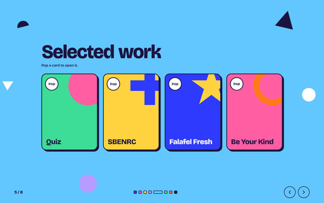
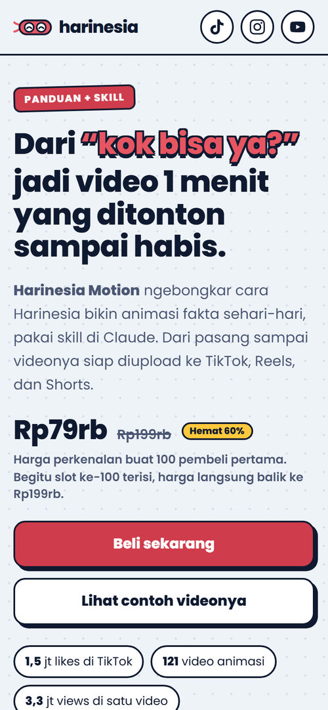
I'm Muhammad Basurah. For 5+ years I've built websites and web apps for teams in Australia, Canada and the US, working remotely from Indonesia: WordPress themes, Gutenberg and ACF blocks, HubSpot modules, Shopify sections and Next.js apps. I also run my own studio, Basrh.com.
In the last year I started designing and shipping my own products. The part I care about most comes before the code: who the user is, where they get stuck, and what the numbers say about it. I'm moving into product design to do that work full time.
2025 – present · South Perth, Australia (remote)
10+ custom WordPress themes, 20+ HubSpot modules, load times cut by up to 50%.
2023 – May 2025 · Canada (remote)
Led front-end on 30+ WordPress sites. Homepage Lighthouse score 72 → 95.
2022 – Nov 2023 · United States (remote)
Led a 5-person team across 8+ projects with 95% on-time delivery.
Earlier: Zona Media Indonesia (newsletter platform rebuild, Lighthouse 30 → 90), Girisa Technology (GPS-validated attendance system), Ma Chung University (thesis: PWA with facial recognition). Full history on basrh.com.
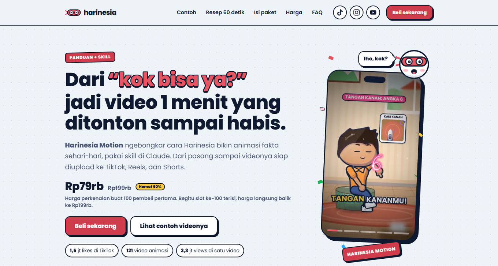
Sales page for my animation course. Designed, built and measured, then changed based on analytics and an exit survey.
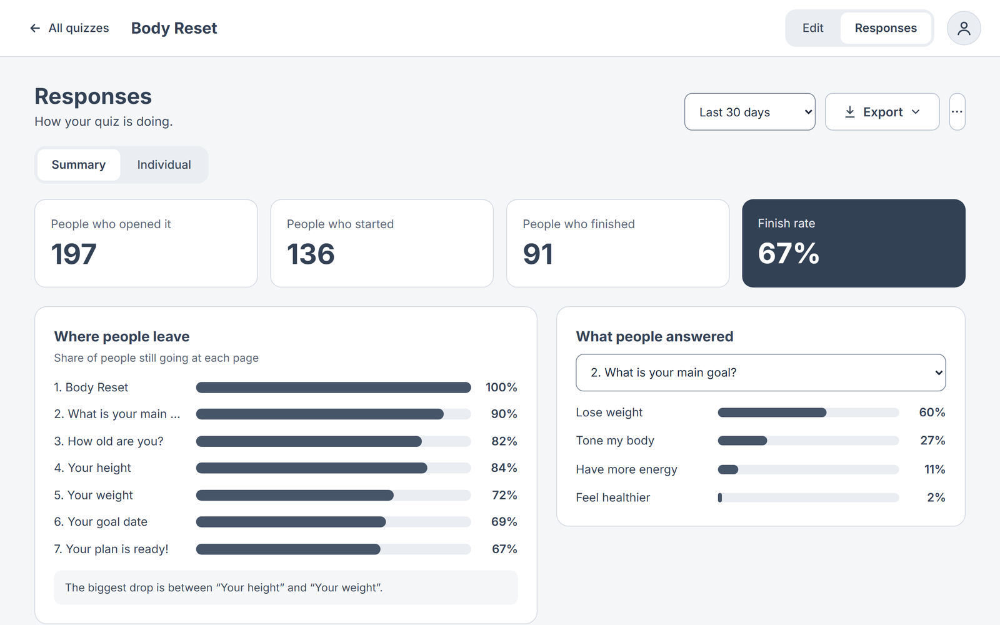
A quiz builder that shows where people drop off. Designed in Claude Design, then built and shipped.
My portfolio as an 8-slide interactive deck, with its own visual system.
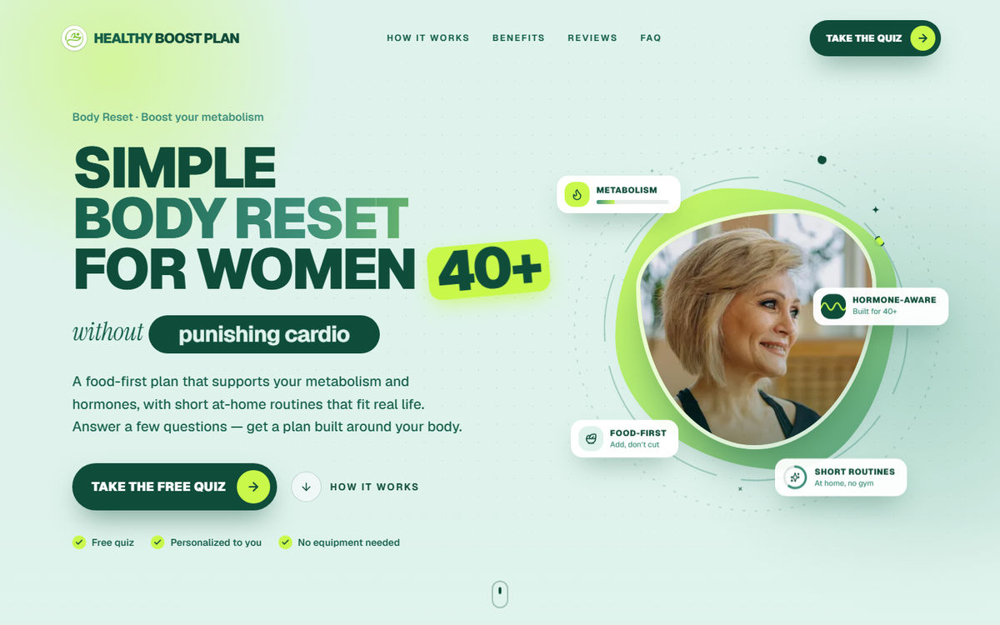
A 30-step quiz funnel with conditional steps and a no-code editor. Quiz grew out of its engine.
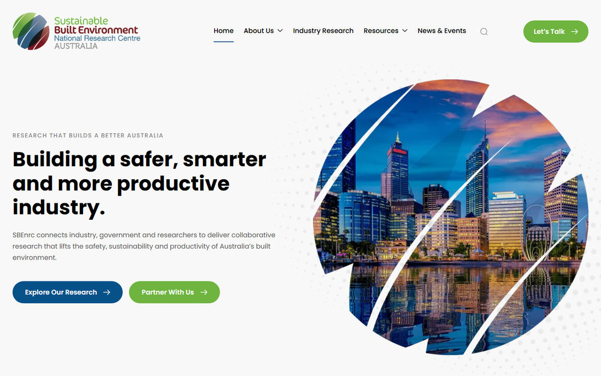
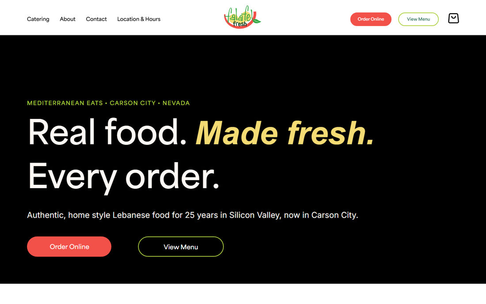
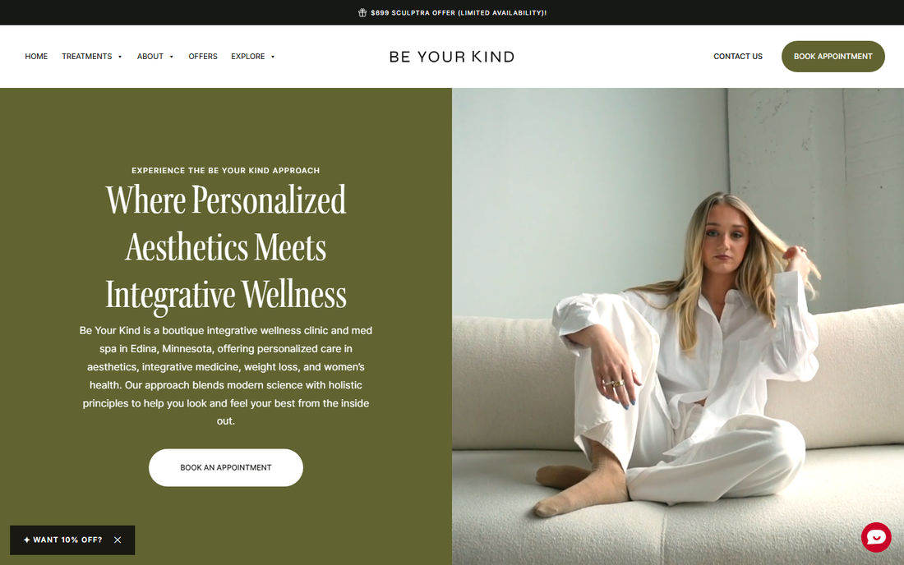
SBENRC, Falafel Fresh and Be Your Kind: front-end builds from agency and client designs.
Harinesia is my animated explainer channel: one-minute videos about everyday things, with 51k followers on TikTok and Instagram. Viewers kept asking how the videos are made, so I packaged the process as a product, Harinesia Motion: a Claude skill, 5 tutorial videos and a script template.
Sell a digital product to people who tap a link in a short video, on a phone, inside Instagram's in-app browser, with a few seconds of attention and a price they haven't seen before.
All of it: product, page structure, UI, copy in Indonesian, build (static HTML, CSS and JS generated from JSON content), analytics setup and the exit survey. Built with Claude Code. Live since 28 Oct 2026 at harinesia.id/panduan.
96% of visitors are in Indonesia, and about three in four open the page inside an app's built-in browser (Chrome webview 59%, Instagram 15%). So: phone first, a light page for mid-range Android phones, and a buy button that never needs a scroll to find.
Headline: “From ‘how is that possible?’ to a one-minute video people watch to the end.”
Hero
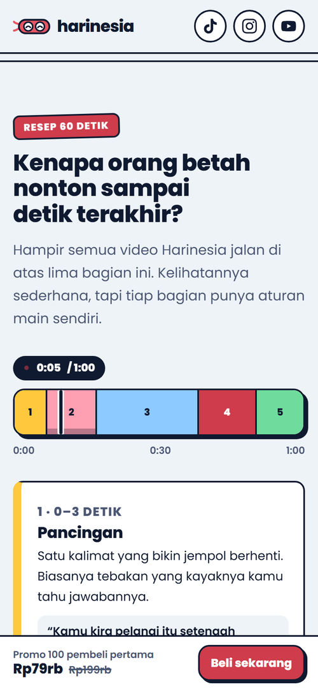
The 60-second recipe
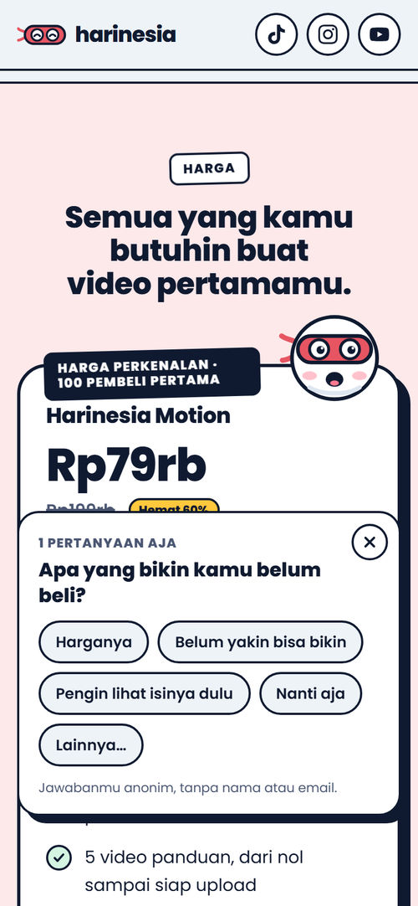
Exit survey
Sections reached on the sales page, as a share of the first section
Where the 376 buy-button clicks came from
This is why price and the buy button stay in the hero and in the phone bottom bar, instead of only at the end of the page.
Exit survey answers, before and after the price change
Remaining answers: “later” and “other”. The “after” sample is small.
Added analytics events per section and per button, and the exit survey.
Introductory price for the first 100 buyers, down from Rp199k to Rp79k.
Added a buyer case study with the real screenshot the buyer sent, to answer “show me first”.
The product is live with paying customers. One buyer, a marriage registrar with no animation background, had a video pass 177k views about 5 days after starting with the guide. Price is still the top objection, but it dropped from 61% to 50% of answers while “show me what's inside” rose from 12% to 33%.
The funnel showed where people left; the survey told me why. I changed the price and the popup on the same day, so I can't credit either change alone. Next time I'd ship one change at a time, and the next change is a preview of the course content.
Healthy Boost Plan was a 30-step quiz funnel I built for a digital health product: JSON-driven steps, conditional branches, a result chart and a no-code editor. The funnel never ran paid traffic, but the engine worked. I turned that engine into a product anyone can use.
Google Forms is free and familiar, but it shows answers, not drop-off. A coach or a shop owner running a quiz wants to know which question loses people, without paying for a funnel tool or writing code.
Non-technical people who build quizzes, and the people who answer them. Answering needs no account and is designed for phones first. Building happens in a dashboard on a computer.
Solo: product scope, UX and UI in Claude Design, build in Next.js 15 and Supabase, and QA. Live at quiz.basrh.com since 9 Nov 2026.
Quiz, live site
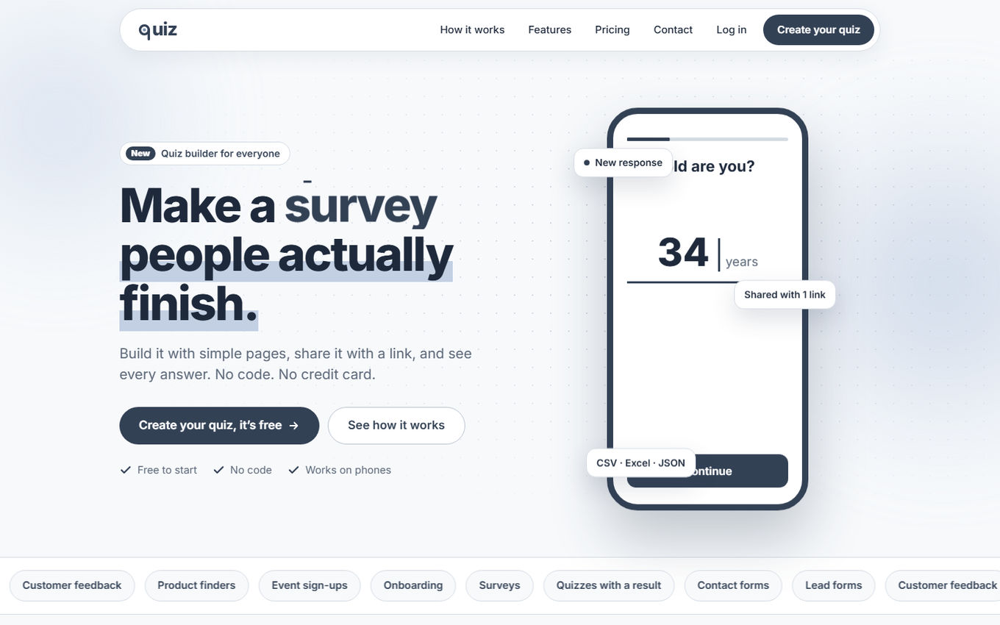
Where it started: Healthy Boost Plan
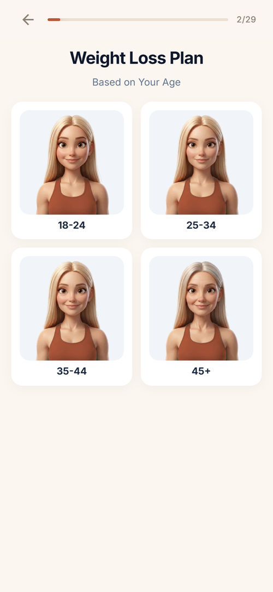
Step 2 of 29 on a phone.
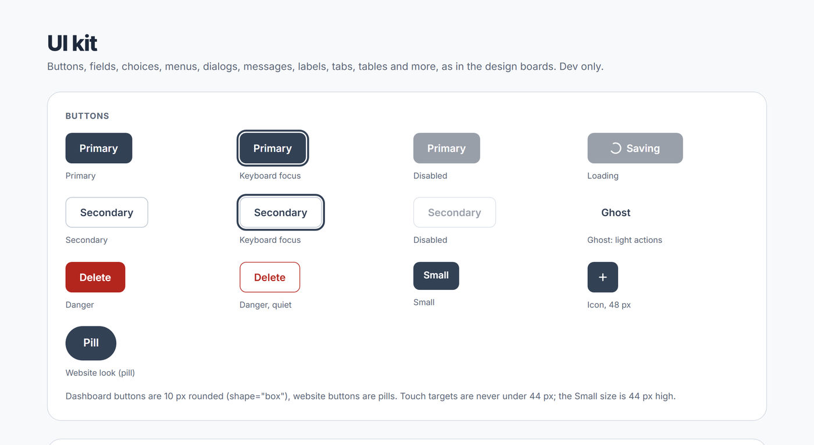
Slate #334155
primary
Ink #1E293B
text
Page #F4F6F8
dashboard
Danger #B3261E
destructive
Type: Inter, 4 px spacing grid, radii 8 / 10 / 16 / 24 px, 200 ms hover, 800 ms entrance.
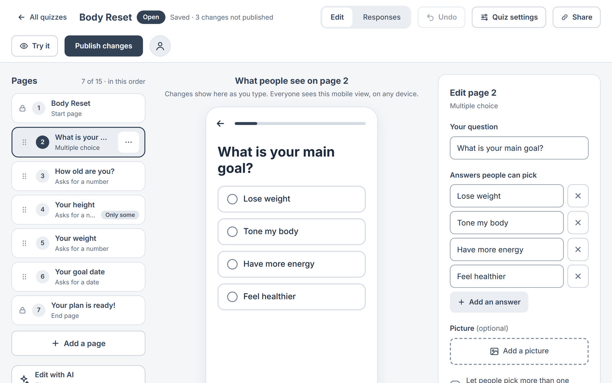
1 2 3 4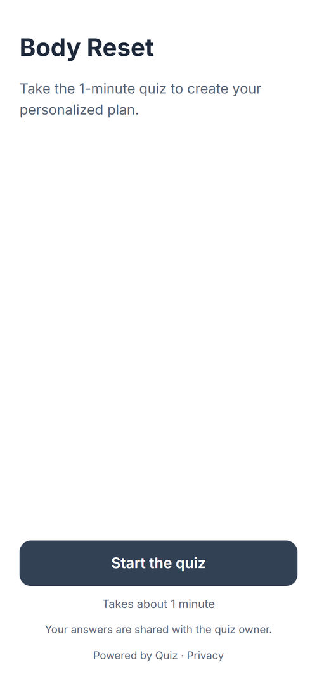
Start page
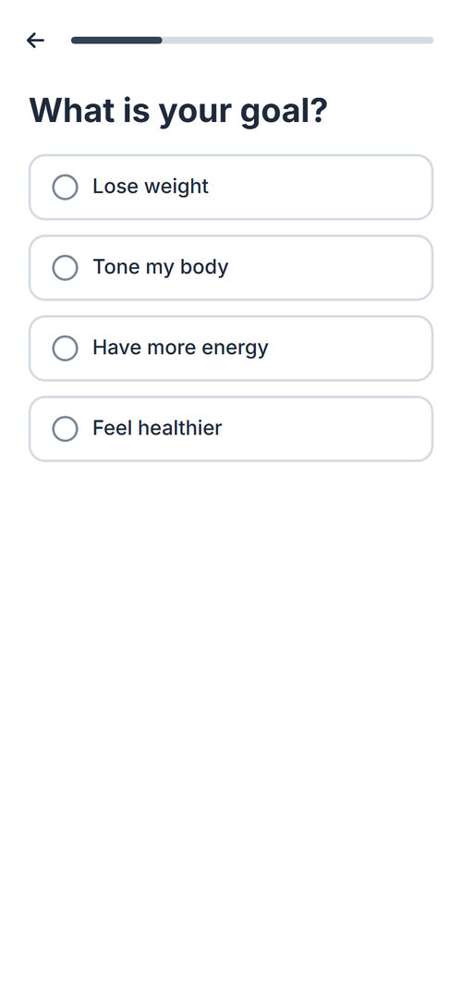
A question
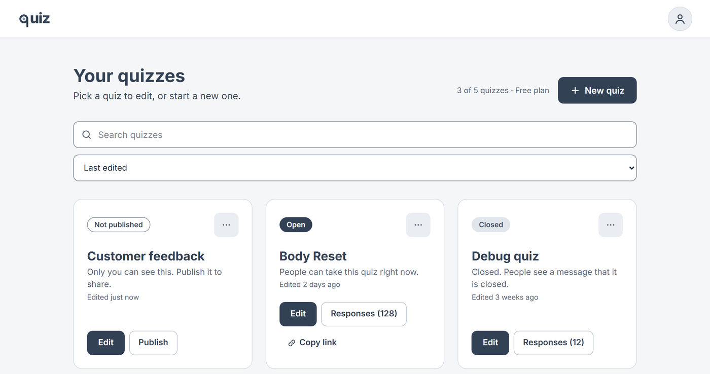
4 5Live at quiz.basrh.com with 7 page types and export to CSV, Excel and JSON. Playwright scripts sign up, build, answer and export like a real user, next to accessibility and link checks. No outside users yet, so there are no usage numbers to show.
Designing the states first (empty, error, expired link, closed quiz) took longer than the main screens, and it answered most of the questions that usually come up mid-build.
What I'd change: watch 3 to 5 non-technical people use the editor before building the backend.
Tell a client who I am, where I've worked and what I've built in under a minute, and be remembered among the other freelancers they're comparing.
Design and build, solo. HTML, CSS and JavaScript with GSAP for motion and Matter.js for the physics slide.
Eight slides, one idea and one color each. Arrows, keyboard, swipe, scroll wheel or dots move between slides, and a counter (“5 / 8”) shows where you are.
Any slide with an unusual interaction gets a one-line hint: “Click a tab to switch”, “Pop a card to open it”, “Drag them around”.
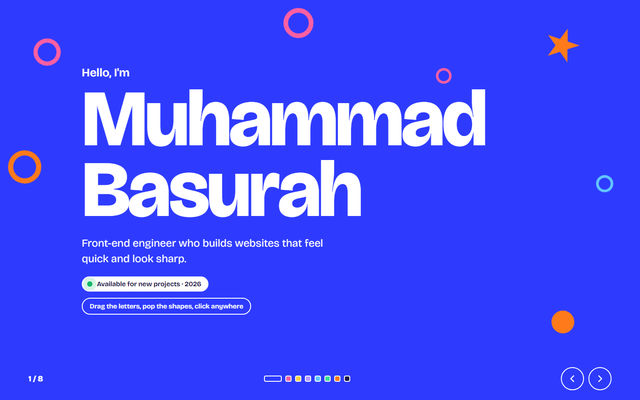
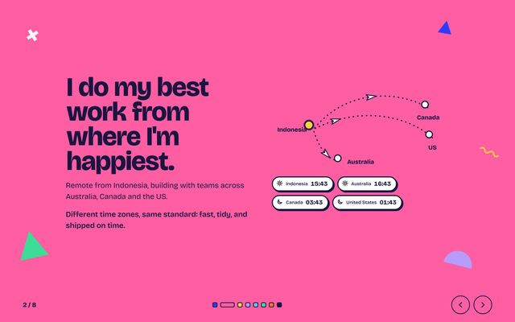
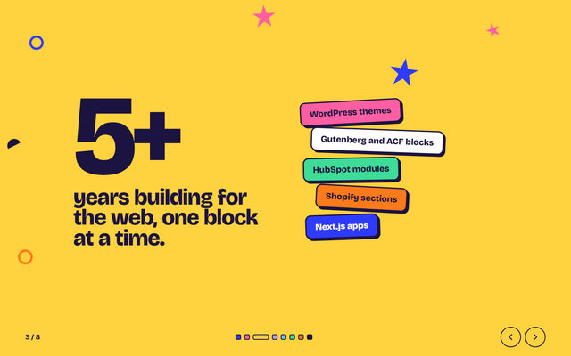
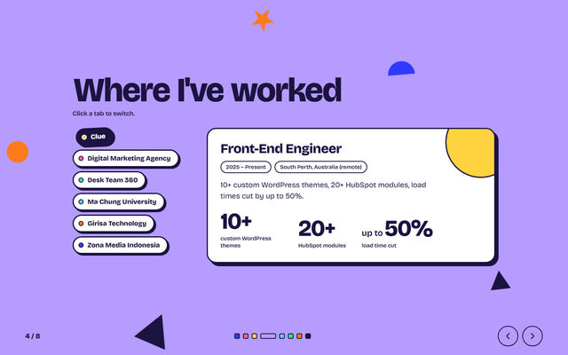
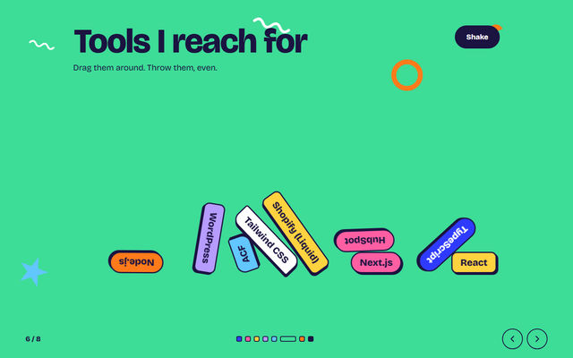
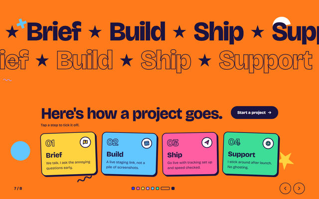
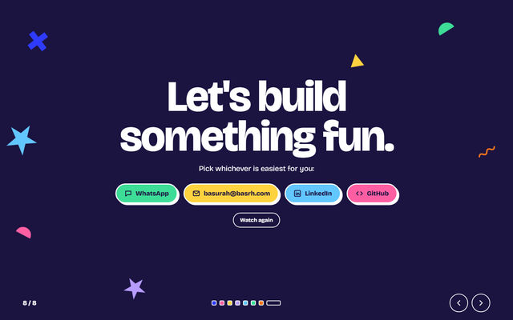
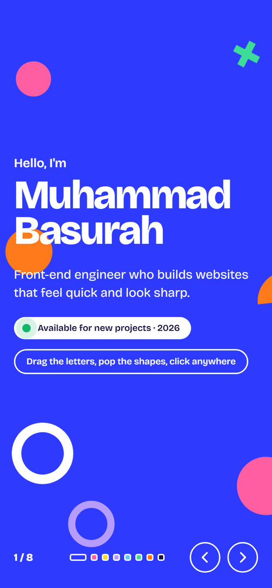
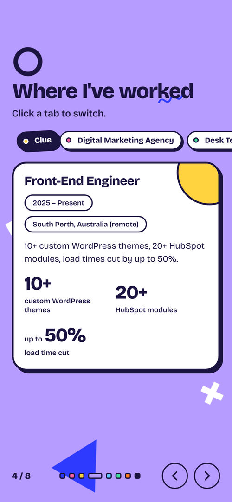
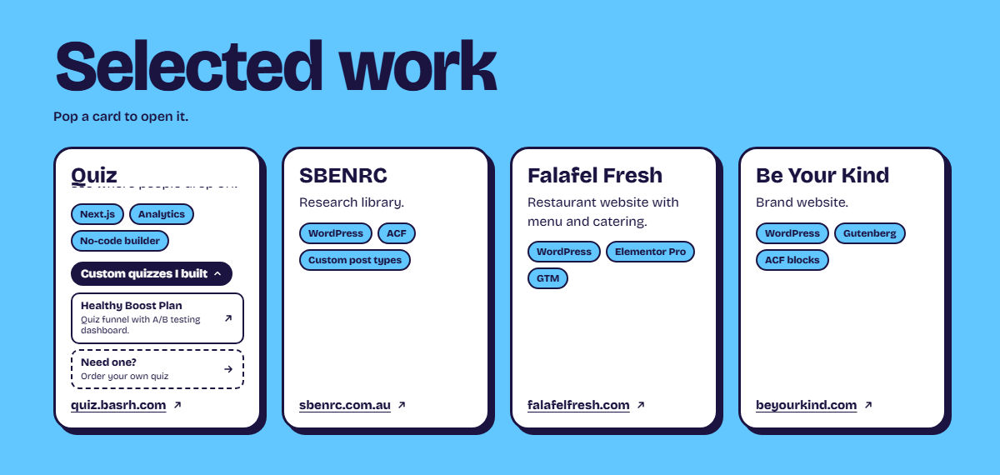
1 2 3 4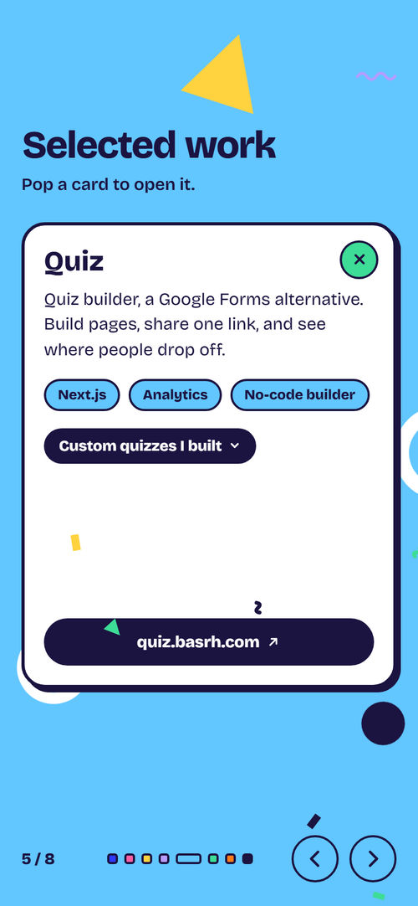
5One background per slide. Text on color is always ink #1B1340; white only on blue and ink.
Aa Bb
Bricolage Grotesque, 800 for headings, 400–600 for text.
3 px ink outlines, hard offset shadows with no blur.
Cards are buttons with aria-expanded; Enter opens, Escape closes. Work tabs follow the arrow keys. All motion stops under reduced motion.
The designs on this page came from the clients' or agencies' designers. My part was the front-end build: responsive layouts, CMS fields the client can edit, and tracking.
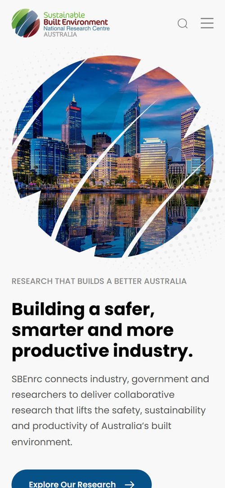
Research library for an Australian built-environment research centre, built on custom post types with ACF fields.
Restaurant website with menu and catering pages, built on Elementor Pro, with Google Tag Manager for tracking.
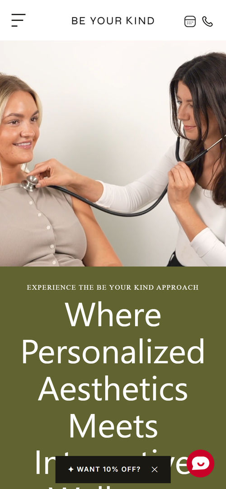
Brand website built from custom Gutenberg blocks with ACF fields.
| WordPress blocks | Each section is a Gutenberg or ACF block with fixed fields, so clients fill content and the layout stays intact. |
| HubSpot modules | 20+ modules at Clue. For one client's module set: shared CSS variables for color, spacing and type, and one color-scheme setting (Light, Light Gray, Dark) that works the same in every module. |
| Quiz UI kit | Tokens in one stylesheet, one component per job, and a registry where each page type has its editor, preview and summary. |
| Harinesia | Text, prices and video lists live in JSON files; a build script writes the HTML, so content changes never touch the templates. |
| This PDF | Built from the basrh.com tokens: the same colors, type and shapes as the site. |
One file for colors, type, spacing, radius and motion.
Every design board mapped to its route and component.
21 decisions, each with a recommendation and a deadline phase.
A test page that links every screen in every state.
Playwright runs of the main flows, plus accessibility and link checks.
I'm looking for a product design role where I work close to engineers and data. I'm based in Indonesia and open to hybrid work in Jakarta.
Live work: harinesia.id/panduan · quiz.basrh.com · basrh.com · healthyboostplan.basrh.com